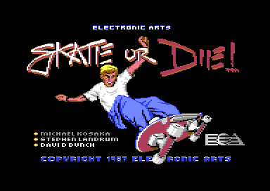
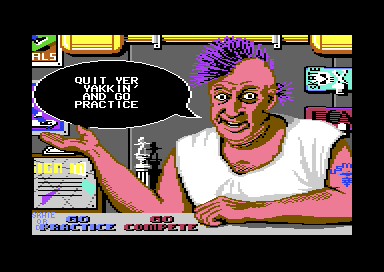

<meta charset="utf-8">
<meta name="viewport" content="width=device-width, initial-scale=1">
<title>Skate or Die!</title>
<link rel="preconnect" href="https://fonts.googleapis.com">
<link rel="stylesheet" href="https://fonts.googleapis.com/css2?family=Lato:wght@400;700;900&family=IBM+Plex+Mono:wght@400;500&display=swap">
<link rel="stylesheet" href="reference/sod-page.css">
<!-- tabs -->
<header class="hero">
  <p class="eyebrow">Commodore 64 · 1987 · Electronic Arts</p>
  <h1>Skate or Die!</h1>
  <p class="sub">Rodney's skate shop, a town square to roll around, and five skateboarding events, from a ramp and a pool to two races down the hill.</p>
</header>
<main class="wrap" data-part="resident">
  <figure class="sod-shot" style="margin-top:8px"><figcaption>The <a href="loading.html#title">title screen</a>, on screen while Rob Hubbard's <a href="music.html#title">title music</a> loads behind it.</figcaption></figure>
  <section id="game">
    <p class="fig">01 · The game</p>
    <h2 class="t">Rodney's shop, a town, and five events</h2>
    <p>The game opens in <a href="town.html#shop">Rodney's skate shop</a>. Rodney, a man with a purple mohawk and a tattoo, leans on the counter and talks back to whatever the player points at: QUIT YER YAKKIN' AND GO PRACTICE (<span data-part="shop"><code>$220E</code></span>). Up to eight skaters <a href="town.html#shop">sign in</a> at the counter and each picks a board colour. From the shop they either practise or compete.</p>
    <p>Practice leads out into a <a href="town.html#square">town square</a>, and the edge of town the skater rolls off decides the event (<span data-part="shop"><code>$1793</code></span>). On the <a href="freestyle.html">Freestyle ramp</a> the skater has ten passes to score <a href="freestyle.html#air">tricks</a>. <a href="highjump.html">High Jump</a> uses the same half-pipe and asks only how high the skater can go. The <a href="race.html">Downhill Race</a> is a run through a park against the clock, and the <a href="jam.html">Downhill Jam</a> is a race down an alley against a second skater who can be <a href="jam.html#fight">punched and kicked</a>. In the <a href="joust.html">Pool Joust</a>, two skaters ride an empty swimming pool and the one with the padded pole tries to <a href="joust.html#hit">knock the other off</a>.<sup class="fn"><a href="about.html#src-1" title="The manual">1</a></sup></p>
    <p>In a competition every skater takes a turn at each event, and the first three get 5, 3, and 1 points (<code>$F7E0</code>), and the best scores go into <a href="town.html#results">Rodney's records</a>, the only thing the game saves to disk.</p>
    <figure class="sod-shot"><figcaption>Rodney in his shop, with <a href="town.html#rodney">one of his 21 lines</a>.</figcaption></figure>
  </section>
  <section id="cast">
    <p class="fig">02 · The cast</p>
    <h2 class="t">Rodney's dear boy, and two more to beat</h2>
    <p>A player with nobody to skate against gets Lester. Rodney asks HAVE YOU MET MY DEAR BOY LESTER? (<span data-part="shop"><code>$2352</code></span>), and Lester is the computer's skater in the <a href="jam.html#lester">Downhill Jam</a>, following eleven waypoints down the alley and swinging at the player whenever they come close. In the <a href="joust.html#cpu">Pool Joust</a> he is the hardest of three opponents. The other two are Poseur Pete, who decides slowly and turns at random, and Aggro' Eddie, who decides twice as often and drops in when the player is high on the right wall (<span data-part="joust"><code>$2F61</code></span>).</p>
  </section>
  <section id="makers">
    <p class="fig">03 · The makers</p>
    <h2 class="t">From Epyx to Electronic Arts</h2>
    <p>The title screen credits Michael Kosaka, Stephen Landrum, and David Bunch. Landrum had been at Epyx, the maker of <i>Summer Games</i> and <i>Winter Games</i>, and joined Electronic Arts in February 1987: "At Electronic Arts, I was the lead programmer on Skate or Die! for the C-64."<sup class="fn"><a href="about.html#src-2" title="Stephen Landrum interview, 1993">2</a></sup> The Retrogaming Times names Kosaka and Landrum among the Epyx team who "moved on to EA and began work on a skateboard-themed compilation of events".<sup class="fn"><a href="about.html#src-5" title="The Retrogaming Times 38">5</a></sup> Bunch and Landrum also left their names in the Downhill Jam, as <a href="discoveries.html#credits">text nothing reads</a>.</p>
    <p>Rob Hubbard, the British composer, came to the game from across the Atlantic: "The first thing I did for EA was Skate or Die C64."<sup class="fn"><a href="about.html#src-3" title="Rob Hubbard, C64.com">3</a></sup> Mark Lewis of EA had asked him "if I wanted to do a couple of months working in the US. That's when I did 'Skate or Die' C64 with the sampled guitars mixed in with the SID chipsounds. They then offered my a permanent job in California."<sup class="fn"><a href="about.html#src-4" title="Rob Hubbard and Chris Abbott, Arcade Attack">4</a></sup> The guitars are recordings played through the SID's volume register, and the <a href="music.html#title">Music and sound</a> tab plays each of them.</p>
  </section>
  <section id="reception">
    <p class="fig">04 · The reception</p>
    <h2 class="t">A Zzap!64 Sizzler</h2>
    <p>Zzap!64, the British Commodore 64 magazine, gave the game 92 % and its Sizzler award in its Christmas 1987 issue.<sup class="fn"><a href="about.html#src-5" title="The Retrogaming Times 38">5</a></sup></p>
  </section>
  <section id="explore">
    <p class="fig">05 · Inside the game</p>
    <h2 class="t">Explore how Skate or Die! works</h2>
    <ul>
      <li><a href="loading.html"><b>Loading and title</b></a>: a <a href="loading.html#ea">one-sector loader</a> that runs itself from the stack, a loader <a href="loading.html#layers">decrypted in layers</a> (<span data-part="boot"><code>$0340</code></span>), a <a href="loading.html#protection">disk check</a> the drive does with its own code, and a <a href="loading.html#title">title picture</a> that moves only its colours.</li>
      <li><a href="town.html"><b>The town</b></a>: <a href="town.html#shop">Rodney's shop</a> as a menu and <a href="town.html#rodney">everything he says</a>, a <a href="town.html#square">square whose edges choose the event</a>, and the <a href="town.html#loading">table that loads each one</a> (<code>$F8A0</code>).</li>
      <li><a href="controls.html"><b>Controls</b></a>: the joystick and keys in the shop, the town, and each event.</li>
      <li><a href="freestyle.html"><b>Freestyle</b></a>: a <a href="freestyle.html#class">trick decided before the coping</a> (<span data-part="ramp"><code>$1C81</code></span>) and a <a href="freestyle.html#falls">bonus for variety</a>.</li>
      <li><a href="highjump.html"><b>High Jump</b></a>: <a href="highjump.html#pump">speed from waggling the stick</a> (<span data-part="highjump"><code>$16E3</code></span>), and why <a href="highjump.html#height">the height of the last pass</a> is the one that counts.</li>
      <li><a href="race.html"><b>Downhill Race</b></a>: a <a href="race.html#course">course where every cell knows its ground</a>, and a <a href="race.html#score">score that is mostly time</a> (<span data-part="downhill"><code>$0B14</code></span>).</li>
      <li><a href="jam.html"><b>Downhill Jam</b></a>: <a href="jam.html#fight">twelve attacks</a>, <a href="jam.html#course">rubbish worth points</a>, and a <a href="jam.html#bonus">time bonus that drains away</a> (<span data-part="jam"><code>$23F8</code></span>).</li>
      <li><a href="joust.html"><b>Pool Joust</b></a>: <a href="joust.html#score">first to three by two clear</a> (<span data-part="joust"><code>$1B3C</code></span>), and <a href="joust.html#cpu">three computer skaters</a> with their own habits.</li>
      <li><a href="graphics.html"><b>Graphics</b></a>: the <a href="graphics.html#picture">half-pipe picture</a> and its <a href="graphics.html#crowd">moving crowd</a>, and all <a href="graphics.html#skater">158 poses of the skater</a> drawn from the game's data.</li>
      <li><a href="music.html"><b>Music and sound</b></a>: Rob Hubbard's <a href="music.html#title">sampled guitars</a>, and <a href="music.html#events">one sound driver</a> that plays every event's music at random.</li>
      <li><a href="discoveries.html"><b>Discoveries</b></a>: <a href="discoveries.html#rules">rules the manual leaves out</a>, <a href="discoveries.html#credits">credits nobody sees</a>, and <a href="discoveries.html#unused">code nothing calls</a>.</li>
    </ul>
  </section>
</main>
